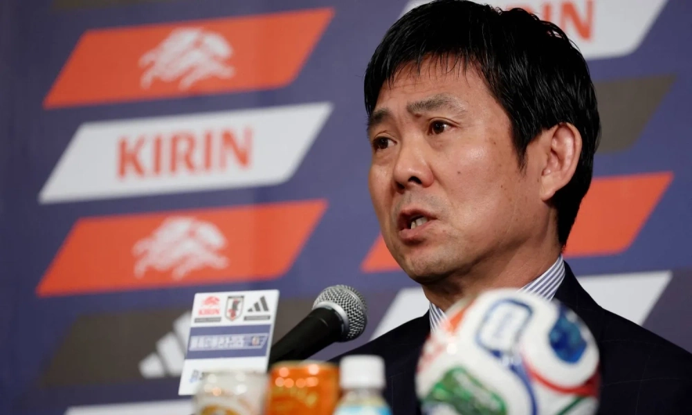
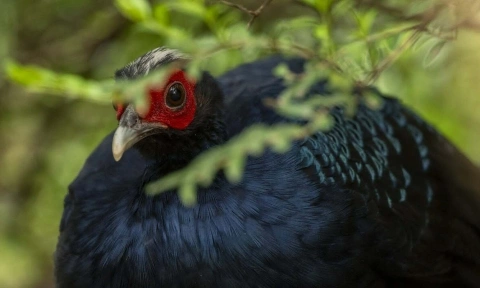
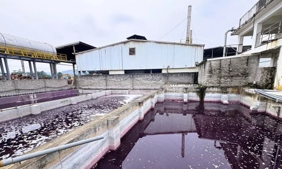
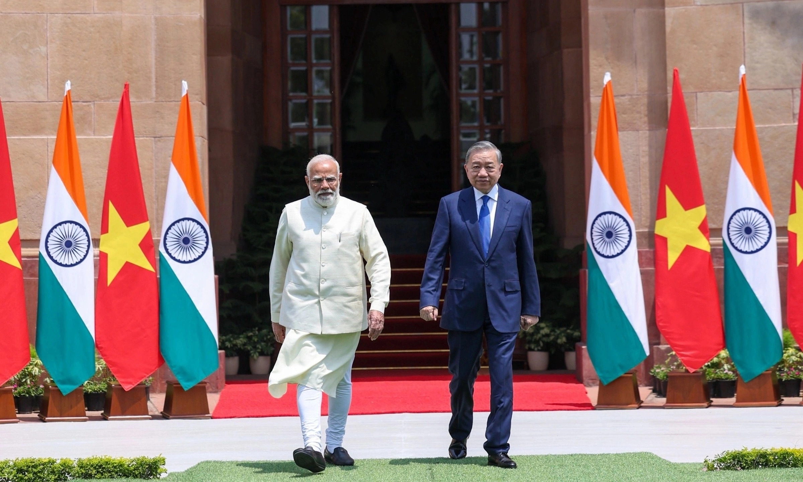

Nhật Bản đặt mục tiêu vô địch World Cup 2026
HLV Hajime Moriyasu gạch tên Kaoru Mitoma và Takumi Minamino vì chấn thương, nhưng vẫn khẳng định mục tiêu vô địch của tuyển Nhật Bản tại World Cup 2026 không thay đổi.

HLV Hajime Moriyasu gạch tên Kaoru Mitoma và Takumi Minamino vì chấn thương, nhưng vẫn khẳng định mục tiêu vô địch của tuyển Nhật Bản tại World Cup 2026 không thay đổi.

20 gà lôi lam mào trắng đầu tiên được đưa từ Đức về Việt Nam, mở ra hy vọng phục hồi loài chim đặc hữu quý hiếm từng biến mất khỏi tự nhiên sau nhiều thập kỷ.

Công ty TNHH BOB Hà Nội bị phạt hơn 1,5 tỷ đồng do vi phạm môi trường khiến hàng loạt giếng khoan ở xã Thạch Quảng đổi màu tím, bốc mùi hôi.
11 công viên chuyên đề, các bảo tàng ký ức, bến tàu phát triển du lịch, làng nghề văn hóa sẽ làm thay đổi cảnh quan hai bên sông Hồng trong tương lai.

Trong chuyên thăm hai nước Nam Á của tổng Bí thư, Chủ tịch nước Tô Lâm , Việt Nam đã nâng cấp quan hệ với Ấn Độ và Sri Lanka, nhất trí mở rộng hợp tác trên nhiều lĩnh vực.

Theo đánh giá của tình báo Mỹ, Lãnh tụ Tối cao hiện tại của Iran vẫn đang đóng vai trò quan trọng trong việc định hình chiến lược chiến tranh, cùng với các quan chức cấp cao nước này.